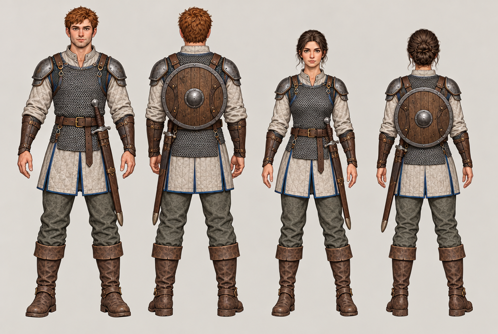
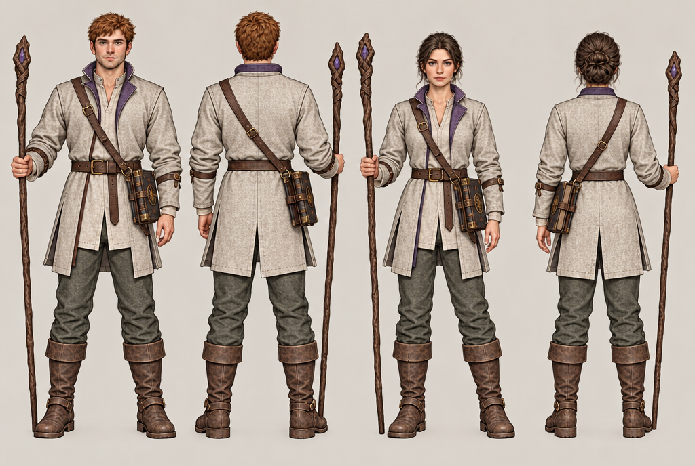
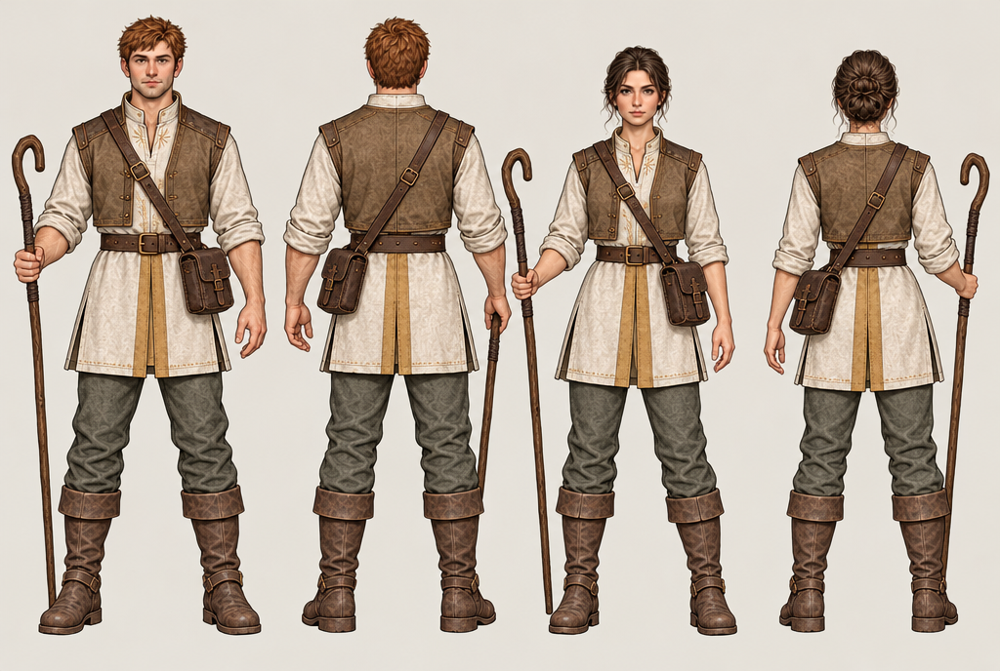

Generations / shared asset library
One role. Equal capability.
Male and female equipment studies: front and rear. Shared construction, protection and readable role silhouettes. Faces, stature and hairstyles remain customisable; these are unnamed concepts.
Open the actual 3D fitting bench · Search library
Swordsman

Keep the sword at the anatomical left hip. Check shield straps and pauldron clearance with arms raised before modelling the final kit.
Mage

Correction required: the male rear view moves the book to the wrong hip. Book stays on the anatomical left; staff stays in the right hand. Do not reproduce the inconsistency in a model.
Cleric

Match the satchel straps and crook curvature between views. Keep full practical coverage and the same equipment capabilities for both bodies.
These are generated design references with unverified usage rights. They are not the CC0 meshes shown in the fitting bench. Read the modelling handoff before building.